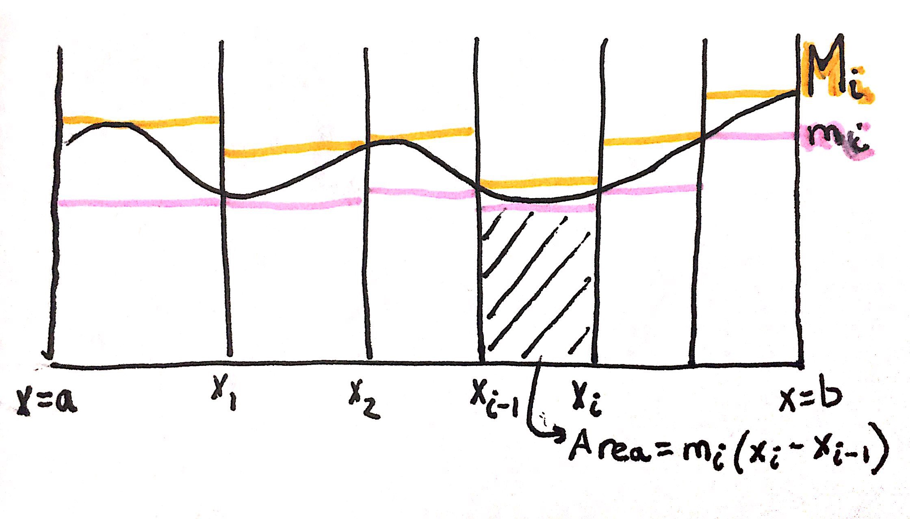
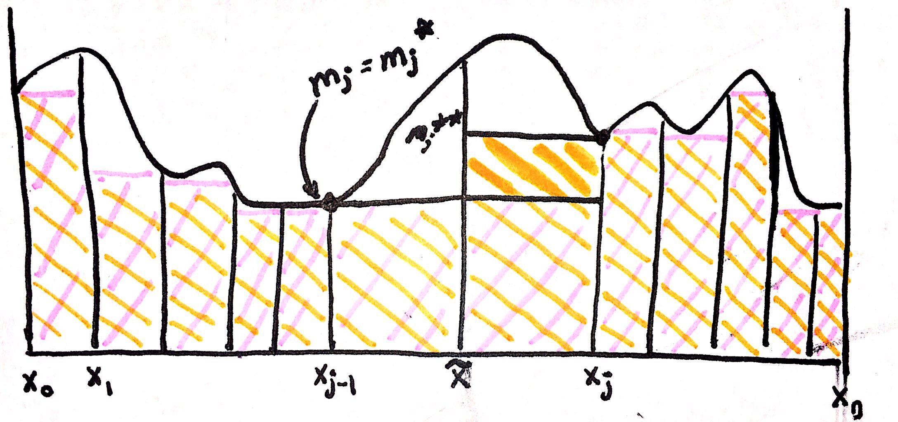

Def: a partition \(P\) of \([a,b]\) is a set of points \(a = x_0 < x_1 < x_2 < \ldots < x_n = b\)
Let \(f(x)\) be defined and bounded on \([a,b]\)
Def: \(m_i\) \(= \inf\left\{ f(x) \mid x_{i-1} < x < x_{i} \right\}\)
Def: \(M_i\) \(= \sup\left\{ f(x) \mid x_{i-1} < x < x_{i} \right\}\)
Def: \(L(f,P)\) \(= \sum_{i=1}^{n}m_{i}(x_{i}-x_{i-1})\)
The function \(L(f,P)\) stands for the lower sum of some function, \(f\), and partition, \(P\).
Def: \(U(f,P)\) \(= \sum_{i=1}^{n}M_{i}(x_{i}-x_{i-1})\)
The function \(U(f,P)\) stands for the upper sum of some function, \(f\), and partition, \(P\).
Image Explanation: Essentially partitions are the dividing lines along the x-axis of a graph. Every \(m_{i}\) is the pink line in the image, and the lowest value of \(f(x)\) for a specific partition of the graph. Whereas every \(M_{i}\) is the orange line in the image, and the highest value of \(f(x)\) for a specific partition of the graph. Thus \(L(f,P)\) is sum of the areas below the \(m_{i}\) lines, and \(U(f,P)\) is sum of the areas below the \(M_{i}\) lines.
Note that for every choice of \(L(f,P)\) and \(U(f,P)\), we want \(L(f,P) < area < U(f,P)\). Thus we need all the upper sums to be less than all the lower sums, but there are some extreme cases.
Extreme Case 1 ~ (when all lower sums = all upper sums)
$$\text{Let } f(x)=1 \text{ on } [17,103]$$
$$\text{Let } P \text{ be a partition of } [17,103]$$
$$L(f,P) = \sum_{i=1}^{n}(1)(x_{i}-x_{i-1})=x_{n}-x_{0}=86$$
$$U(f,P) = \sum_{i=1}^{n}(1)(x_{i}-x_{i-1})=x_{n}-x_{0}=86$$
$$L(f,P) = U(f,P)$$
Extreme Case 2 ~
$$\text{Let } f(x)= \begin{cases} 1 & x= \mathbb{Q} \\ 0 & x \neq \mathbb{Q} \end{cases} \text{ on } [12,103]$$
$$\implies M_{i}=1 \land m_{i} = 0$$
$$L(f,P) = \sum_{i=1}^{n}(0)(x_{i}-x_{i-1})=0$$
$$U(f,P) = \sum_{i=1}^{n}(1)(x_{i}-x_{i-1})=x_{n}-x_{0}=86$$
$$L(f,P) \neq U(f,P)$$
In order to have a reasonable candidate for area, area should be unique, and that is why we want \(\inf(U)=\sup(L)\), thus Extreme Case 2 fails.
Def: Let \(P\) and \(Q\) be partitions with \(P\subset Q\), then Q is said to be finer than \(P\)
Def: Let \(P\) and \(Q\) be partitions with \(P\subset Q\), then P is said to be coarser than \(Q\)
Think about how rocks are more coarse than sand, and sand is more fine. Since \(P\subset Q\), \(P\) has larger chunks of area versus \(Q\), so \(P\) is like the large coarse rocks (with more empty space inbetween) versus \(Q\), the fine sand.
Theorem: Let \(f\) be bounded on \([a,b]\) and let \(P\), \(Q\) be two partitions of \([a,b]\) s.t. \(P \subset Q\), then \(L(f,P) \leq U(f,Q)\)
Theorem Proof:
Lemma: If \(P \subset Q\) then \((L(f,P) \leq L(f,Q))\land(U(f,P)\geq U(f,Q))\)
Lemma Proof: $$\text{Consider the special case where } Q \text{ contains one more point, }\tilde{x} \text{, than } P$$ 
Image Explanation: The pink area represents \(L(f,P)\), and orange area represents \(L(f,Q)\). After adding an extra point, \(\tilde{x}\), it is clear that there should be more area overall (i.e. the bolded orange part of image). The value of \(L(f,Q)\) can be obtained by adding the areas for 4 parts, \(x_{0} \to x_{j-2}\), \(x_{j-1} \to \tilde{x}\), \(\tilde{x} \to x_{j}\) and \(x_{j+1} \to x_{n}\).
$$\text{Suppose } P=\left\{x_{0},\ldots,x_{n}\right\}$$ $$\text{Suppose } Q=\left\{x_{0},\ldots,x_{j-1},\tilde{x},x_{j},\ldots,x_{n}\right\}$$ $$\text{where } a = x_{0} < x_{1} < \ldots < x_{j-1} < \tilde{x} < x_{j} < \ldots < x_{n} = b$$ $$\text{Let } m_{j} = \inf\left\{f(x)\mid x_{j-1} \leq x \leq x_{j}\right\}$$ $$\text{Let } m_{j}^{*} = \inf\left\{f(x)\mid x_{j-1} \leq x \leq \tilde{x} \right\}$$ $$\text{Let } m_{j}^{**} = \inf\left\{f(x)\mid \tilde{x} \leq x \leq x_{j}\right\}$$ $$L(f,P) = \sum_{i=1}^{n}m_{i}(x_{i}-x_{i-1})$$ $$L(f,Q) = \sum_{i=1}^{j-1}m_{i}(x_{i}-x_{i-1})+m_j^{*}(\tilde{x}-x_{j-1})+m_j^{**}(x_{j}-\tilde{x})+\sum_{i=j+1}^{n}m_{i}(x_{i}-x_{i-1})$$ $$\text{Let } T = \sum_{i=1}^{j-1}m_{i}(x_{i}-x_{i-1})+\sum_{i=j+1}^{n}m_{i}(x_{i}-x_{i-1})$$ $$L(f,P) = T+m_j(x_{j}-x_{j-1})=T+m_j(\tilde{x}-x_{j-1})+m_j(x_{j}-\tilde{x})$$ $$L(f,Q) = T + m_j^{*}(\tilde{x}-x_{j-1})+m_j^{**}(x_{j}-\tilde{x})$$ $$m_{j}^{*} \geq m_{j} \implies m_{j}^{*}(\tilde{x}-x_{j-1}) \geq m_{j}(\tilde{x}-x_{j-1})$$ $$m_{j}^{**} \geq m_{j} \implies m_{j}^{**}(x_{j}-\tilde{x}) \geq m_{j}(x_{j}-\tilde{x})$$ $$\implies m_{j}^{*}(\tilde{x}-x_{j-1}) + m_{j}^{**}(x_{j}-\tilde{x}) \geq m_{j}(\tilde{x}-x_{j-1}) + m_{j}(x_{j}-\tilde{x})$$ $$\implies T + m_{j}^{*}(\tilde{x}-x_{j-1}) + m_{j}^{**}(x_{j}-\tilde{x}) \geq T + m_{j}(\tilde{x}-x_{j-1}) + m_{j}(x_{j}-\tilde{x})$$ $$\implies L(f,Q) \geq L(f,P)$$ Theorem Proof Continued: